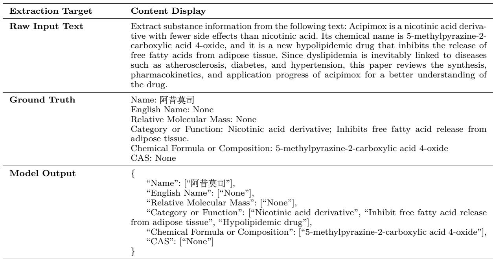

上节课讲到了 ICL（上下文内学习）：给模型看一个例子，它就能照着做。这节课讲的 SCoPE 框架就用到了这个技术。
另外需要知道 JSON 是什么——就是一种结构化的数据格式，长这样：
{"名称": "阿昔莫司", "CAS号": "None"}
🔧 SCoPE 框架概览
SCoPE = Structured and Constrained Prompting Extractor
它不是一个新的模型，而是一套精心设计的 Prompt（提示词）模板。你把这段 prompt 发给任何 LLM，它就能按照你想要的格式从文本中提取信息。
框架由 4 个模块 组成，每个模块解决一个具体问题：
模块 1：Task Description（任务描述）
解决的问题：LLM 不知道自己是来干嘛的，容易跑偏。
给 LLM 分配一个专属角色："你是一个化学信息提取专家"。
这叫作 角色锚定（Role Anchoring）。就像对一个人说"你现在是法官"——他的思维方式会自动切换到法官模式。
激活了模型的生化领域先验知识后，它处理化学文本时会更专注，不会去关注无关信息。
模块 2：Field Definitions（字段定义）
解决的问题：不告诉 LLM 要提取什么，它就会自由发挥。
精确定义 6 个核心字段，告诉模型每个字段的含义、提取优先级、语义范围：
| 字段 | 告诉模型的话（大意） |
|---|---|
| Name | "提取物质的中文名称，优先选择最常见名称" |
| English Name | "提取英文名称，如果没有则标为 None" |
| Chemical Formula | "提取化学式或组成描述" |
| Category or Function | "提取类别或功能，用动词-名词结构描述" |
| CAS Number | "提取 CAS 登记号（格式为 XXX-XX-X）" |
| Relative Molecular Mass | "提取相对分子质量（数值）" |
这相当于给了模型一个标准化的填空模板——不管你从哪儿来的文本，提取出来的数据格式都是一样的。
模块 3：Processing Rules（处理规则）
解决的问题：模型会自己胡编乱造（幻觉）。
这里有两把"锁"：
🔒 锁一：Zero-Inference 策略
规定：如果文本中没有提到某个字段的值，就直接输出 "None"，不准自己推断。
输入文本："该物质是一种白色结晶粉末，易溶于水……"（没写 CAS 号）
❌ 不加：模型可能会说 "CAS 号是 7732-18-5"（编造——因为水也易溶、水是 7732-18-5）
✅ 加了：模型输出 "CAS: None"（老老实实说不知道）
很多人会问："但是模型明明可以推理出来啊，为什么不让它推理？"
答案是：在海关检验这种场景下，宁缺毋滥。你编造一个 CAS 号比不写更可怕——可能导致错误的检测判断。
🔒 锁二：Verb-Noun（动词-名词）引导结构
对于"Category or Function"这类描述性字段，要求输出格式必须以 "动词 + 名词" 的形式：
✅ "Inhibit fatty acid release"（抑制脂肪酸释放）—— 动词 Inhibit + 名词 fatty acid release
❌ "It is a drug that can inhibit the release of fatty acids"—— 太长太随意
模块 4：Output Example（输出示例）
解决的问题：光讲规则，模型可能还是不知道怎么具体做。
给一个完整的 输入-输出示例（One-shot）：
→ 期望输出 JSON：{
"Name": ["阿昔莫司"],
"English Name": ["None"],
"Chemical Formula": ["5-methylpyrazine-2-carboxylic acid 4-oxide"],
"Category or Function": ["Nicotinic acid derivative", "Inhibit free fatty acid release"],
"CAS": ["None"],
"Relative Molecular Mass": ["None"]
}
这利用了上一课讲的 ICL——模型看了这个例子，就明白了格式和风格要求。这比写 10 条规则都管用。

🧩 三个版本的对比
论文设计了 3 种 prompt 来做消融实验（下节课详细讲），让你看到每个模块到底贡献了多少：
| 版本 | 包含什么 | 可以理解为 |
|---|---|---|
| Baseline | 只有基础指令 | "给我提取信息"——极其模糊 |
| Partial | Baseline + 字段定义 + 处理规则 | 明确了"提取什么"和"规则是什么" |
| Full（SCoPE） | Partial + 输出示例（One-shot） | 再加一个"照着做"的例子 |
📐 先预热：怎么判断提取得对不对？
讲完框架，有一个问题自然浮现："怎么知道模型提取对了？"
这就是评估要做的事。论文用的最简单直观的指标叫 Exact Match（精确匹配）：
对于那些"答案唯一"的字段（Name、English Name、Chemical Formula、CAS、Molecular Mass）：
得分 = 1（如果预测值 = 正确答案），否则 = 0对就是对，错就是错，没有中间地带。
不过要注意，比较前论文会做3 项预处理：忽略大小写（"Caffeine" = "caffeine"）、去除多余空格、对分子质量做数值标准化。这样不会因为格式问题被扣冤枉分。
比如 CAS 号正确答案是 "7732-18-5"，模型输出 "7732-18-6" → 得 0 分，就是一个字都不能差。
特别规则：如果模型和人工标注都写了 "None"，也算对——说明模型正确识别出"这个字段没有信息"。
反幻觉规则：反过来，如果模型输出为 None 但人工标注有值，或者人工标注为 None 但模型输出了值——也就是一方为 None、另一方不为 None——该字段直接得 0 分。这是为了防止模型"假装不知道"或者"瞎编数据"。
但对于"Category or Function"这种描述性字段，Exact Match 就不太适用了（同一功能可能有不同的表述方式）。怎么评估它？——下节课讲。
📌 这节课的核心
| 问题 | 答案 |
|---|---|
| SCoPE 是什么？ | 一套 4 模块的 prompt 框架，不是新模型 |
| 四大模块是什么？ | 任务描述、字段定义、处理规则、输出示例 |
| Zero-Inference 是什么？ | 文本没提到的字段不准编，直接输出 None |
| Verb-Noun 是什么？ | 功能描述必须用"动词+名词"格式 |
| One-shot 有什么用？ | 给一个完整示例，模型看了就会照做（ICL） |
| Exact Match 怎么打分？ | 预测值=正确答案得 1 分，否则 0 分 |
✏️ 课后练习
📝 练习 1：四大模块连线
把模块和对应的核心作用连起来：
| 模块 | 作用 |
|---|---|
| ① Task Description | A. 告诉模型不能瞎编 |
| ② Field Definitions | B. 给一个"照着写"的样例 |
| ③ Processing Rules | C. 给模型分配专家角色 |
| ④ Output Example | D. 明确要提取的 6 个字段 |
💡 答案
①→C, ②→D, ③→A, ④→B
🧪 练习 2：Zero-Inference 判断
一段文本说 "XX 物质是一种新型降脂药，属于烟酸衍生物。" 文本没有提到 CAS 号和分子质量。
按照 Zero-Inference 策略，模型应该怎么输出 CAS 号和 Relative Molecular Mass 字段？
💡 答案
两个字段都输出 "None"。虽然模型可以推断（降脂药通常分子量在 200-500 之间），但不能让它推断——宁缺毋滥。
🤔 练习 3：想一想
如果让你把 SCoPE 框架用到另外一个领域（比如从法院判决书中提取案件关键信息），你需要改哪些部分？
- Task Description 要改成什么角色？
- Field Definitions 要定义哪些字段？
- Processing Rules 需要什么特殊规则？
这是训练"可迁移思维"——SCoPE 的方法论可以套用到很多场景。